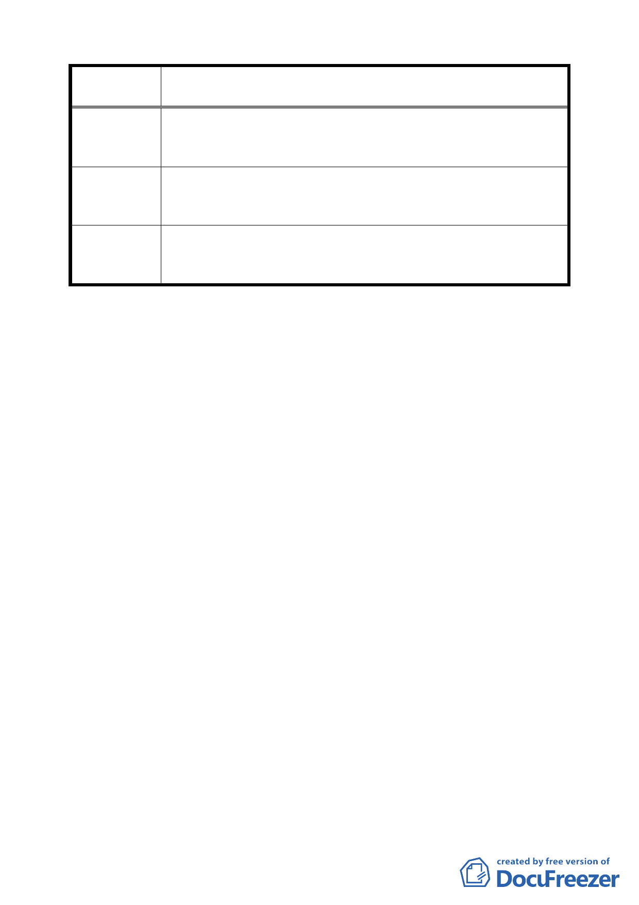

案 名 修訂臺北市南港區新光段 2 小段 27-2 等地號 15 筆土地細部
計畫案
452 地號北側與計畫公園鄰接處劃設一約 600 ㎡指定最小建
築規模 200 ㎡以上，其餘為 1000 ㎡，有失公平比例，且符合
分區使用規定僅達 200 ㎡之區塊僅一塊，會造成糾紛。
該區塊直接訂為一建築規模區塊約 600 ㎡，其餘區塊仍為
建 議 辦 法 1000 ㎡，如此則較為公允，並鼓勵合併分配使用可避免爾後
分配糾紛。
本案為保障小地主權益，最小基地建築面積訂為 200 平方公
委員會決議 尺以上，未來並請地政處監督重劃會妥善配地以保障小地主
權益。
討論事項二
案名：變更臺北市文山區木柵路一段中興山莊附近地區主要計畫
案
說明：
一、本案係市府以 94 年 4 月 11 日府都規字第 09405799703 號函
送到會，並自 94 年 4 月 12 日起公開展覽 30 天。
二、申請單位：臺北市政府
三、法令依據：都市計畫法第 27 條第 1 項第 4 款
四、計畫範圍：詳計畫圖所示。
五、變更理由及內容：詳計畫報告書所示。
六、公民或團體所提意見：9 件。
七、本案經提 94 年 6 月 8 日第 543 次委員會議決議組成專案小組，
成員為黃委員兼召集人書禮、陳委員武正、張委員樞、蘇委
員瑛敏、黃呂委員錦茹（已卸任）及錢委員學陶等六位委員。
94 年 9 月 16 日簽准增加邊委員泰明、張委員桂林及黃委員武
達（已卸任）等 3 位委員。95 年 1 月 23 日第 552 次溫琇玲委
員及于俊明委員新加入本專案小組。
八、本專案小組共召開一次現場會勘（94 年 7 月 20 日），四次專
四